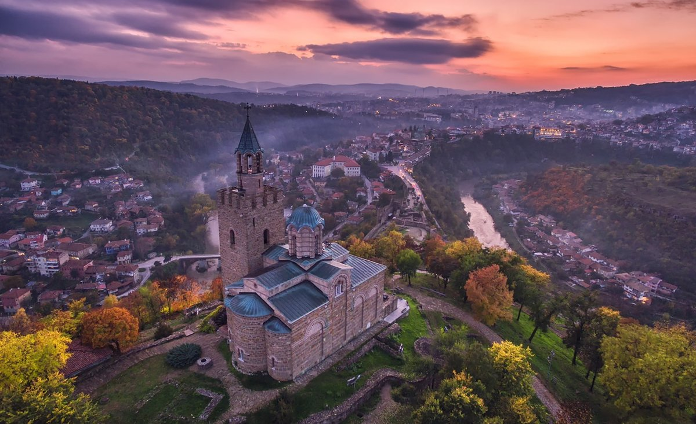
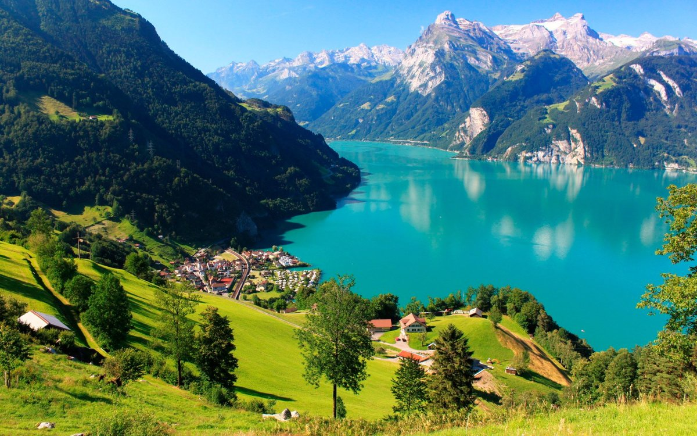
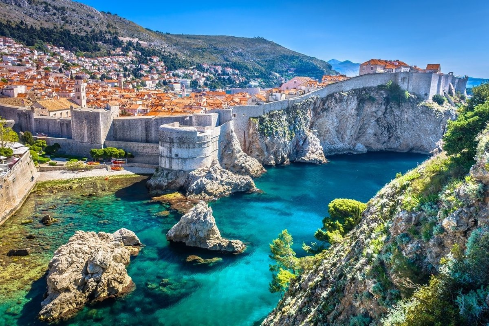

Вітаю в моєму блозі!
Я люблю подорожувати та відкривати нові місця. У цьому блозі я зібрав три міста, які вразили мене найбільше, і пояснив, чим саме.
Також ви можете запропонувати власне місто для наступного рейтингу через форму.
Мій рейтинг
1. Софія (Болгарія)

Столиця Болгарії біля підніжжя гори Вітоша: затишне місто з давньою історією та гарними парками.
2. Будапешт (Угорщина)

Столиця Угорщини на берегах Дунаю: величні палаци, термальні купальні та жива нічна атмосфера.
3. Загреб (Хорватія)

Столиця Хорватії з австро-угорською архітектурою, кав'ярнями та затишним Верхнім містом.